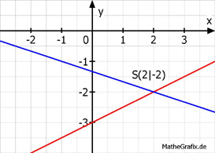

Lineare Gleichungssysteme Aufgabe 61 Bestimmen Sie den Schnittpunkt der Geraden. y = 0,5x - 3 1 4 y = - --- x - --- 3 3 y = y 1 4 0,5x - 3 = - --- x - --- |*3 3 3 1,5x - 9 = -x - 4 |+x 2,5x - 9 = -4 |+9 2,5x = 5 |:2,5 x = 2 y = 0,5 * 2 - 3 = 1 - 3 = -2 